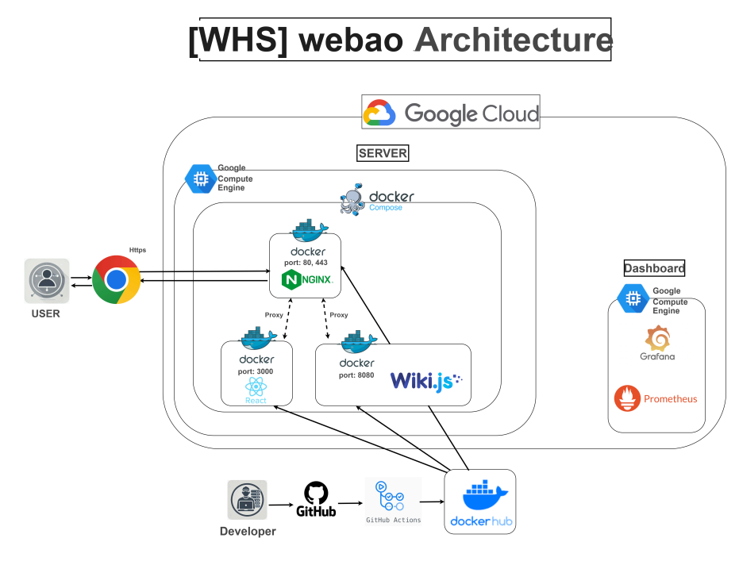
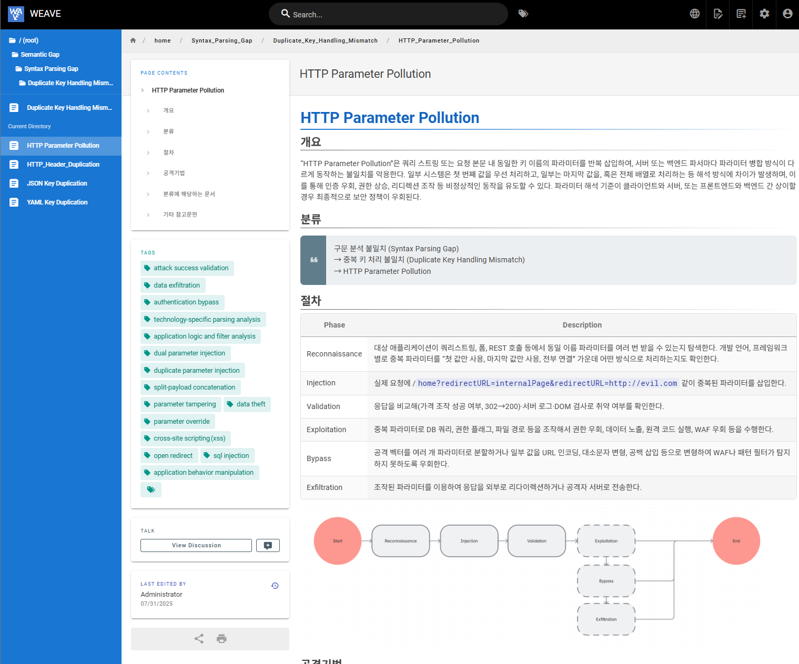
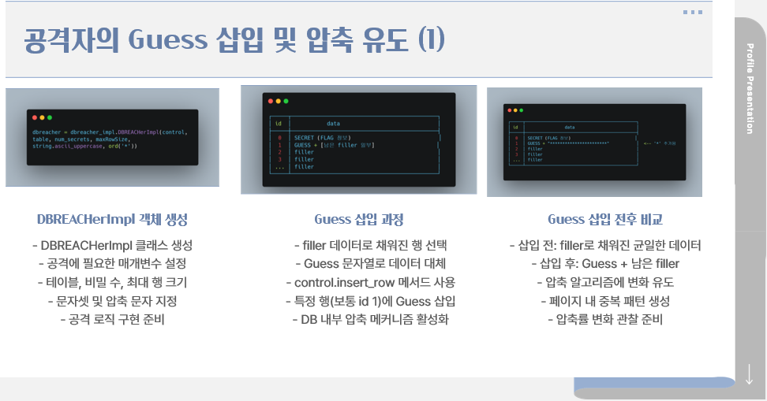
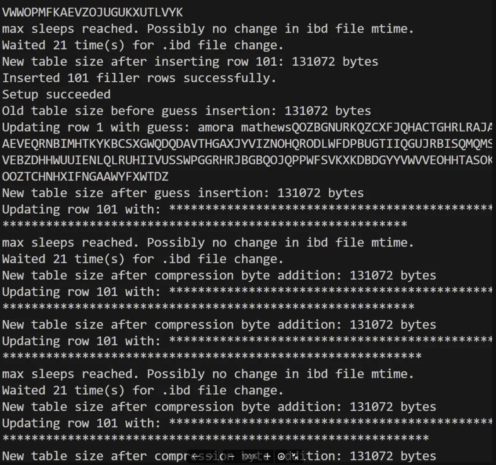

2026
DEF CON 34 CTF Finals
Competed in the finals with The Seoul Sauna Shogunate
7th in the qualifier / 8,641 points
이종윤ialleejy
Web & cloud security researcher
Security research and CTF challenge design at ENKI WhiteHat
Currently designing and building MSGCTF Cloud Platform with the team

2026
Competed in the finals with The Seoul Sauna Shogunate
7th in the qualifier / 8,641 points
2026
Presented GnawLab, an open-source AWS security lab
August 7 & 8 / Las Vegas Convention Center
A CTF operations platform connecting challenge deployment, team instances and service monitoring
Component repositories
An open-source lab that recreates real-world AWS security incidents with Terraform
Contributed an AWS Bedrock Agent scenario and co-presented at DEF CON 34 Demo Labs
Contribution Trust boundaries between RAG knowledge bases and agents

Vulnerability taxonomy

Platform architecture

Research documentation
A knowledge platform for Semantic Gap vulnerabilities caused by differing interpretations between components
Defined the research scope and organized cases into a root-cause taxonomy
Role Research scope & taxonomy / WhiteHat School, 3rd cohort

MariaDB experiment setup

Measurement flow

Experiment record
Undergraduate research into size differences produced by database compression
Built a MariaDB environment with Docker and examined measurement noise and reproducibility
Role Research & experiment setup / MariaDB, Python, Docker
HACKTHEON Sejong 2026
Two Web challenges / Qualifier, April 25
Lead organizer / Challenge author
Led overall operations and team coordination for 108 teams and 315 players in the qualifier, followed by 8 teams and 30 players in the finals
Authored three qualifier Web challenges, two finals Jeopardy challenges and the Live Fire Web challenge
Founder / First president
Founded Myongji University’s security club and led its early operations
Organized campus CTF and programming contests, built competition platforms and co-organized MSG CTF
Mentored four cohorts in web security, forensics, Android and DevOps, with Pwnable and reversing study sessions from September 2024 to August 2025
Presented reCAPTCHA v2 research at the 2025 club seminar
Information security specialist
Operated security appliances, managed security policies and supported monitoring
Reported internal web vulnerabilities and developed a browser policy management utility
2026
2026
A security research workflow project for managing runs and findings
Run and finding models / API contracts / CI validation
2025
A competition platform connecting submissions, scoring, leaderboards and Discord tools
Co-organized two events in 2025, with five university security clubs and about 100 participants across 50 teams in the second event
Platform development and integration / Competition operations / Web & MISC challenges
2025
A club website and deployment environment for a learning management service
Project management / React & Vite / Automated deployment / Security checks
2025
A browser extension and Django REST backend for malicious URL detection
DevOps / Docker deployment / BreakCAPTCHA research
2024 ~ 2025
A programming contest leaderboard and operations tool using Baekjoon submission records
Django / Submission validation & scoring / GCP deployment
2022 ~ 2023
A Windows utility for managing browser developer-tools policies
Python / Windows policies / PyInstaller distribution
Joined in 2026
UofTCTF 2026, 8th place / 0xL4ugh CTF v5, 4th place
Also competed in 0xFUN CTF 2026
1st place
156 participants
1st place
Individual Web category
Excellence Award
Security tooling & policy proposal
Also competed / WhiteHat School CTF 2025, FIESTA 2024, CCE general division 2024 & 2025, CCE public sector division 2022 & 2023